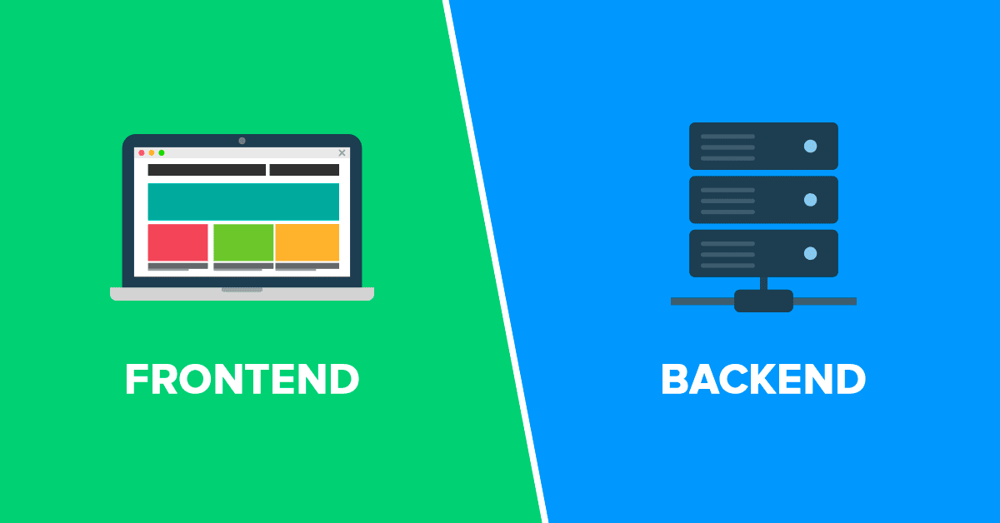
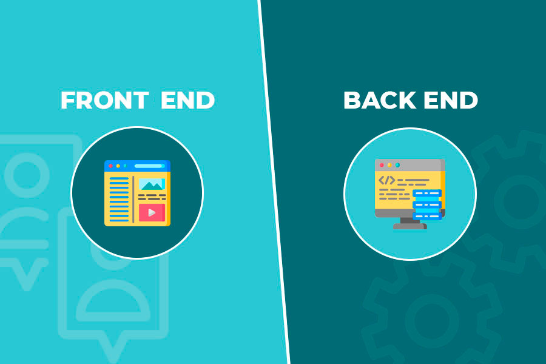

El frontend, también conocido como cliente o lado del cliente, se refiere a la parte de un sistema informático o aplicación web que es visible y con la que interactúa el usuario final. Es la interfaz que los usuarios ven y con la que interactúan directamente en sus navegadores o dispositivos. El frontend se encarga de presentar la información de manera visual y facilitar la interacción del usuario con la aplicación. Esto incluye el diseño de la interfaz de usuario, la disposición de elementos visuales como botones y formularios, la navegación entre diferentes secciones de la aplicación y la presentación de datos obtenidos del backend.

Las tecnologías comunes utilizadas en el desarrollo del frontend incluyen HTML (HyperText Markup Language) para la estructura, CSS (Cascading Style Sheets) para el diseño y la presentación visual, y JavaScript para la interactividad y la lógica del lado del cliente. Además, se utilizan bibliotecas y frameworks como React, Angular y Vue.js para facilitar el desarrollo de interfaces de usuario interactivas y dinámicas. En resumen, el frontend es la parte visible y accesible de una aplicación web o sistema informático, proporcionando la interfaz con la que los usuarios interactúan directamente. Trabaja en conjunto con el backend para brindar una experiencia de usuario completa y funcional.
